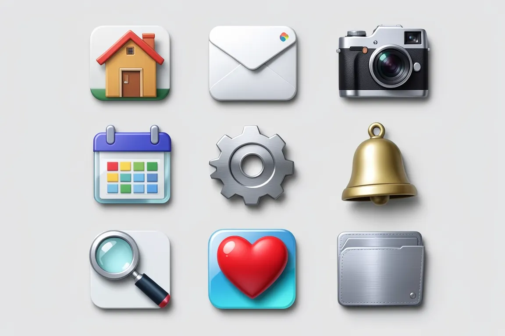

иконки · 2001–2013 · также: Фотореалистичная иконка, Иконка приложения эпохи Aqua, Иконка в стиле Tango
Иконки, похожие на маленькие настоящие предметы: кожа, стекло, металл и бумага, свет сверху, градиенты и мягкая падающая тень. Пик стиля пришёлся на Mac OS X Aqua и iOS 1–6, а Tango придал ему открытую полуреалистичную форму.

Главная идея
Иконка — маленькая картинка настоящего предмета, и материал подсказывает пользователю, что делает функция.
Принципы дизайна
Рисуйте мастер-версию в 256 или 512 px и вручную подгоняйте копии в 16, 22, 32 и 48 px.
Освещайте каждый предмет сверху или сверху слева под 45°, с одним бликом и одной теневой стороной.
Дайте каждой поверхности материал: линейный градиент из 2–5 опорных точек для металла, стекла, дерева или бумаги.
Добавьте светлую внутреннюю кромку 1 px сверху и тёмный контур 1 px с непрозрачностью 20–40% вокруг предмета.
Роняйте мягкую тень под предметом с непрозрачностью 20–35%, смещение 1–3 px вниз при 32 px.
Берите вид в три четверти или слегка сверху, чтобы предмет показывал глубину.